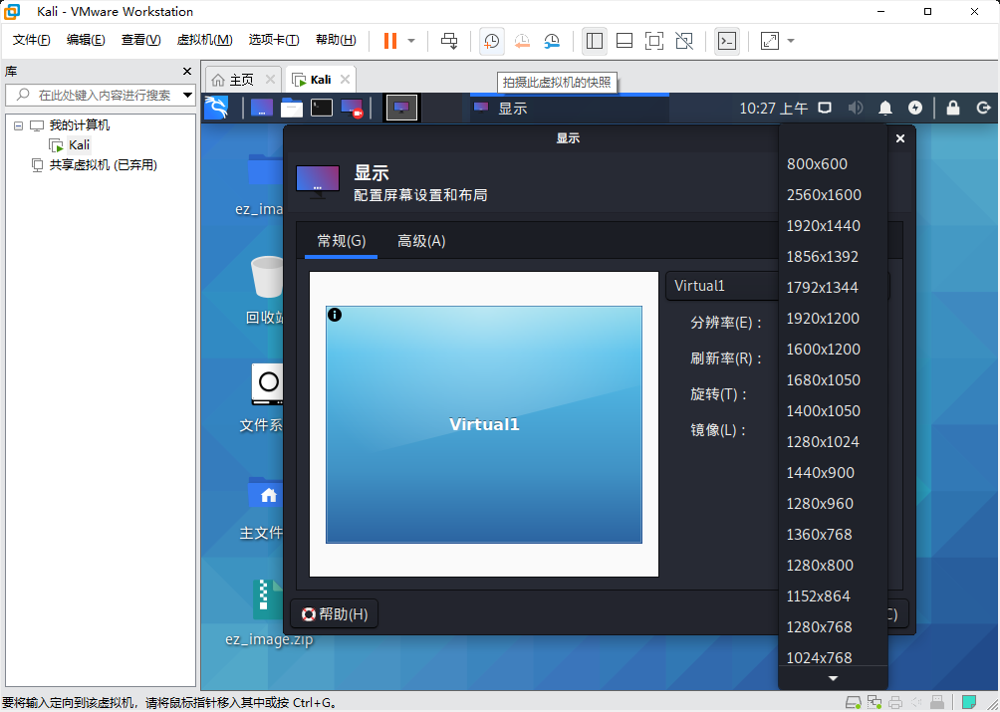
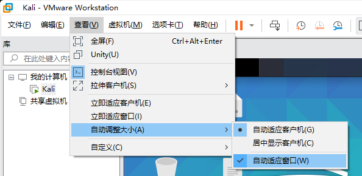

kali设置分辨率为1920×1080
2020-11-15在VMware中安装Kali，设置分辨率时无1920×1080选项
但使用其它分辨率会影响观感。在终端中输入如下代码可以实现设置分辨率为1920×1080：
xrandr --newmode "1920x1080" 173.00 1920 2048 2248 2576 1080 1083 1088 1120 -hsync +vsync
xrandr --addmode Virtual1 1920x1080
xrandr --output Virtual1 --mode 1920x1080
但在重启后又会发现，分辨率变回的原来的设置。而且有时虚拟机并不是全屏使用的，能否让VMware自动调整大小呢？可以找到在“查看”→“自动调整大小”中进行相关设置，即可实现。
